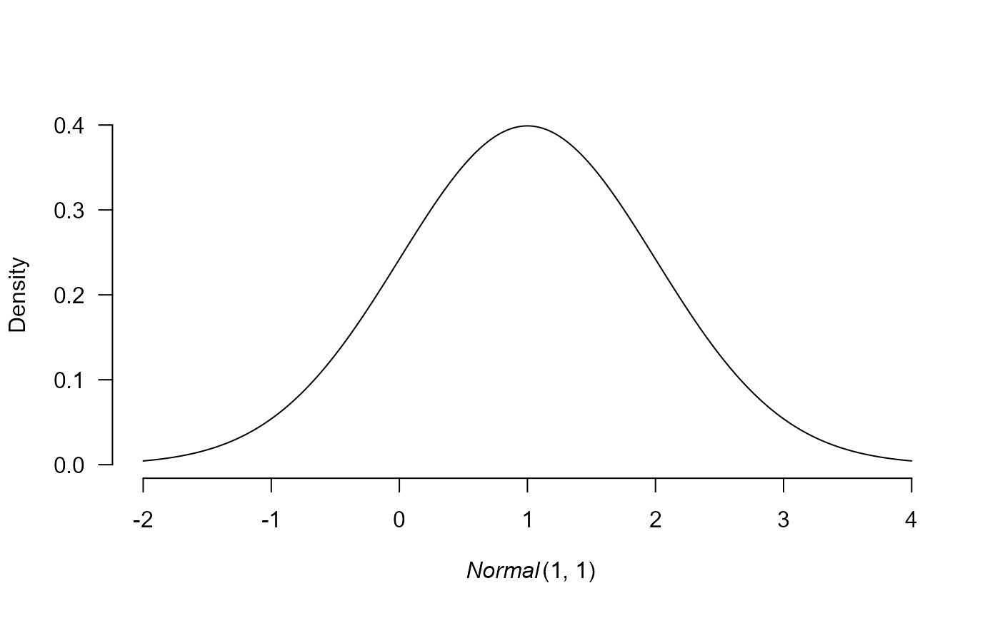

prior creates a prior distribution.
The prior can be visualized by the plot function.
Arguments
- prior_weights
prior odds associated with a given distribution. The value is passed into the model fitting function, which creates models corresponding to all combinations of prior distributions for each of the model parameters and sets the model priors odds to the product of its prior distributions.
Value
prior and prior_none return an object of class 'prior'.
A named list containing the distribution name, parameters, and prior weights.
Examples
# create a standard normal prior distribution
p1 <- prior(distribution = "normal", parameters = list(mean = 1, sd = 1))
# create a half-normal standard normal prior distribution
p2 <- prior(distribution = "normal", parameters = list(mean = 1, sd = 1),
truncation = list(lower = 0, upper = Inf))
# the prior distribution can be visualized using the plot function
# (see ?plot.prior for all options)
plot(p1)
